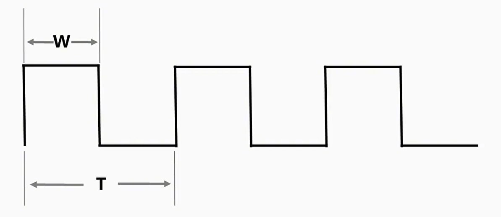
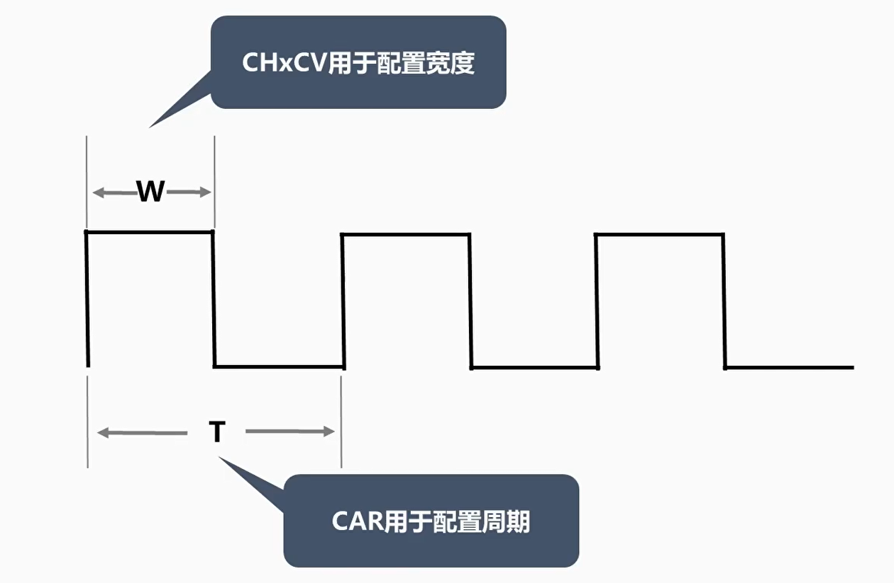
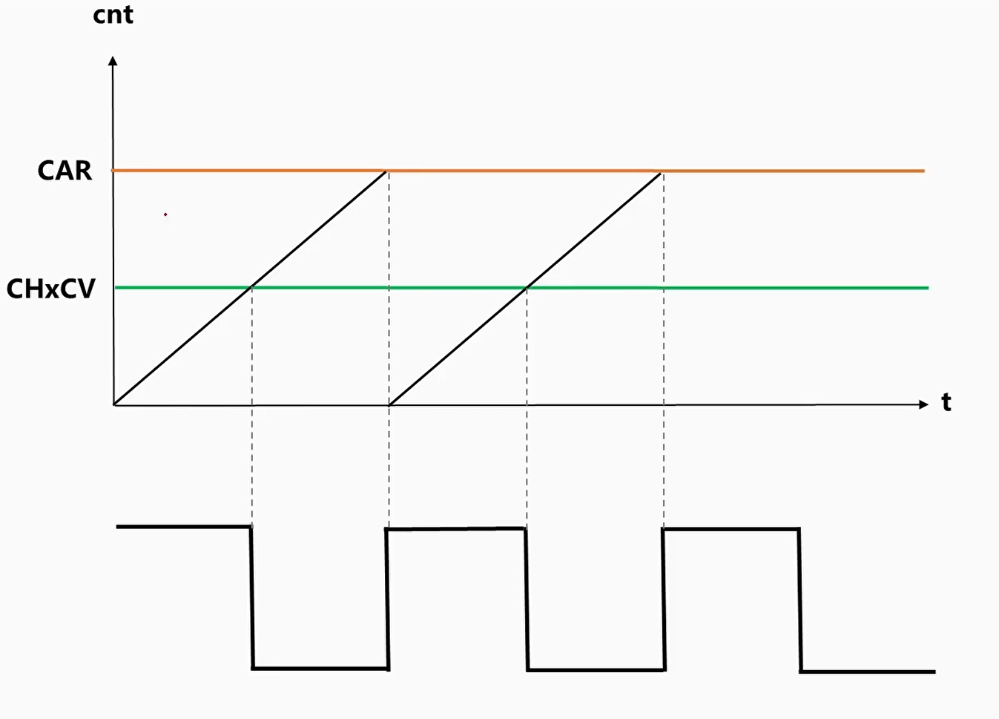
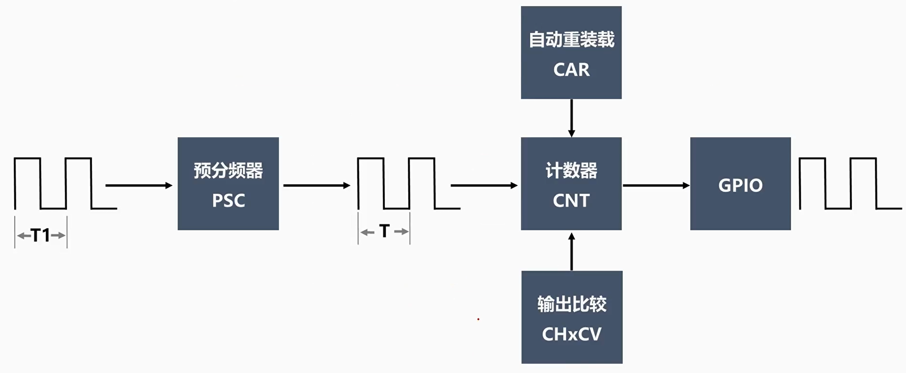
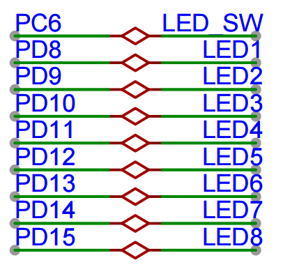
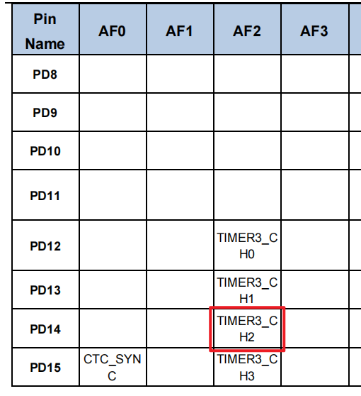
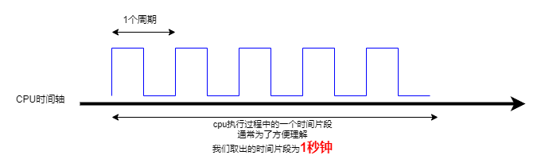
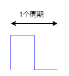

<!DOCTYPE lake>
<h2 data-lake-id="LVXFZ" id="LVXFZ"><span data-lake-id="uc1306efb" id="uc1306efb">学习目标</span></h2><ol list="uf2c02df6"><li data-lake-id="udf22e937" fid="u1986649e" id="udf22e937"><span data-lake-id="u57089df7" id="u57089df7">理解PWM和定时器的关系</span></li><li data-lake-id="u65fb8531" fid="u1986649e" id="u65fb8531"><span data-lake-id="ua5692fff" id="ua5692fff">掌握通用定时器开发流程</span></li><li data-lake-id="u04af5bbf" fid="u1986649e" id="u04af5bbf"><span data-lake-id="u17d41833" id="u17d41833">理解周期，分频系数，周期计数，分频计数。</span></li><li data-lake-id="uf8fba41d" fid="u1986649e" id="uf8fba41d"><span data-lake-id="u9ea00f2b" id="u9ea00f2b">掌握分频计数、周期计数和占空比的计算策略</span></li></ol><h2 data-lake-id="h5iD4" id="h5iD4"><span data-lake-id="u6144497e" id="u6144497e">学习内容</span></h2><h3 data-lake-id="V4vUw" id="V4vUw"><span data-lake-id="u9298c1c9" id="u9298c1c9">PWM</span></h3><p data-lake-id="ufd8604fc" id="ufd8604fc"><span data-lake-id="ufb1024a6" id="ufb1024a6">PWM全称是脉宽调制（Pulse Width Modulation），是一种通过改变信号的脉冲宽度来控制电路输出的技术。PWM技术在工业自动化、电机控制、LED调光等领域广泛应用。</span></p><p data-lake-id="u7524de82" id="u7524de82"><span data-lake-id="u784e6f18" id="u784e6f18">PWM是一种将数字信号转换为模拟信号的技术，它通过改变信号的占空比来控制输出的电平。</span></p><p data-lake-id="u49a1d9ba" id="u49a1d9ba"><span data-lake-id="u45a98e62" id="u45a98e62">在ARM32系列芯片中，PWM输出的频率和占空比可以由程序控制，因此可以用来控制各种电机、灯光和其他设备的亮度、速度等参。</span></p><p data-lake-id="u8324b78d" id="u8324b78d"><span data-lake-id="u8623392c" id="u8623392c">在ARM32系列芯片中，PWM的调制是通过Timer来实现的。PWM与引脚相关，除了基本定时器以外，其他类型的Timer都可以作为PWM来进行使用。</span></p><p data-lake-id="u9f339dcd" id="u9f339dcd"></p><h3 data-lake-id="UqW66" id="UqW66"><span data-lake-id="uc56a2aa3" id="uc56a2aa3">pwm原理</span></h3><p data-lake-id="ufe5e46c8" id="ufe5e46c8"></p><blockquote data-lake-id="u1fc4f324" id="u1fc4f324"><p data-lake-id="u4bcbde0d" id="u4bcbde0d"><span data-lake-id="u8e0cbae7" id="u8e0cbae7">CHxCV是输入捕获和输出比较寄存器</span></p></blockquote><p data-lake-id="uf1aa1a85" id="uf1aa1a85"></p><p data-lake-id="ud6d27b16" id="ud6d27b16"></p><h3 data-lake-id="LDid1" id="LDid1"><span data-lake-id="u133152d7" id="u133152d7">需求</span></h3><p data-lake-id="uc4968eaa" id="uc4968eaa"></p><p data-lake-id="u41ed8fbf" id="u41ed8fbf"><span data-lake-id="ub350dd8f" id="ub350dd8f">以</span><code data-lake-id="u570838b3" id="u570838b3"><span data-lake-id="u2f24deac" id="u2f24deac">PD14</span></code><span data-lake-id="uee4f5009" id="uee4f5009">对应的LED4为例，我们做一个呼吸灯的效果。</span></p><p data-lake-id="udac276a1" id="udac276a1"><span data-lake-id="u760fa345" id="u760fa345">我们采用TIMER3CH2进行实现：</span></p><p data-lake-id="u8158b878" id="u8158b878"></p><h3 data-lake-id="uFGlN" id="uFGlN"><span data-lake-id="u5ba32ad0" id="u5ba32ad0">开发流程</span></h3><ol list="u126fd033"><li data-lake-id="u16d91a0c" fid="udaef0291" id="u16d91a0c"><span data-lake-id="ub66ef26b" id="ub66ef26b">添加Timer依赖</span></li><li data-lake-id="u04a778bc" fid="udaef0291" id="u04a778bc"><span data-lake-id="u98b5cbc6" id="u98b5cbc6">初始化PWM</span></li><li data-lake-id="ud1b844e9" fid="udaef0291" id="ud1b844e9"><span data-lake-id="u4be97221" id="u4be97221">PWM占空比控制</span></li></ol><h4 data-lake-id="dvGaG" id="dvGaG"><span data-lake-id="ub4702ce8" id="ub4702ce8">初始化PWM</span></h4><span class="yuque-card-unsupported">[codeblock]</span><h4 data-lake-id="DzCQM" id="DzCQM"><span data-lake-id="u1ba34a23" id="u1ba34a23">PWM占空比控制</span></h4><span class="yuque-card-unsupported">[codeblock]</span><h4 data-lake-id="MUS8W" id="MUS8W"><span data-lake-id="u0096f139" id="u0096f139">main函数修改duty</span></h4><span class="yuque-card-unsupported">[codeblock]</span><h3 data-lake-id="ZrOPd" id="ZrOPd"><span data-lake-id="ud5603a59" id="ud5603a59">输出通道</span></h3><p data-lake-id="u2d091912" id="u2d091912"><span data-lake-id="u7ff131b2" id="u7ff131b2">这里完整配置为多种：</span></p><span class="yuque-card-unsupported">[codeblock]</span><p data-lake-id="u9cd7a17e" id="u9cd7a17e"><span data-lake-id="ue91268d0" id="ue91268d0">我们具体的可以分为两类：</span></p><span class="yuque-card-unsupported">[codeblock]</span><span class="yuque-card-unsupported">[codeblock]</span><p data-lake-id="u0f729df3" id="u0f729df3"><span data-lake-id="u41baef55" id="u41baef55">特别观察API，带N的为反向，带P的为正向。</span><strong><span data-lake-id="u28fef62b" id="u28fef62b">赋值的结果常量也是需要注意是否带N。</span></strong></p><p data-lake-id="u36a632f3" id="u36a632f3"><span data-lake-id="u66a3a674" id="u66a3a674">P和N的配置主要出现在互补PWM中，如果当前的Timer不是高级定时器，那么就不具备互补的功能，那么我们一律认为他是P类型，也就是设置P才有用。</span></p><p data-lake-id="u95b9e1ec" id="u95b9e1ec"><span data-lake-id="u66691713" id="u66691713">通过设置outputstate 的 ENABLE来控制输出通道的开启。</span></p><h3 data-lake-id="CO3ON" id="CO3ON"><span data-lake-id="ucd3a23b2" id="ucd3a23b2">关心的内容</span></h3><ul list="u864fb88e"><li data-lake-id="u533a6427" fid="u8d7b87f5" id="u533a6427"><span data-lake-id="uca3ee12e" id="uca3ee12e">哪个定时器</span></li><li data-lake-id="u8029a02d" fid="u8d7b87f5" id="u8029a02d"><span data-lake-id="u63e06d63" id="u63e06d63">哪个引脚输出pwm</span></li><li data-lake-id="u14d0af9d" fid="u8d7b87f5" id="u14d0af9d"><span data-lake-id="uc3ce1497" id="uc3ce1497">周期和分频系数</span></li></ul><h3 data-lake-id="YFl6k" id="YFl6k"><span data-lake-id="ua2711e17" id="ua2711e17">重要的关键词</span></h3><h4 data-lake-id="SEP9w" id="SEP9w"><span data-lake-id="u3ac8145c" id="u3ac8145c">周期</span></h4><p data-lake-id="u1c4d4de1" id="u1c4d4de1"></p><p data-lake-id="ua1a13140" id="ua1a13140"><span data-lake-id="ueecd0b48" id="ueecd0b48">pwm中，一个周期就是一次高低电平的变化。</span></p><h4 data-lake-id="jAmSx" id="jAmSx"><span data-lake-id="ua0b1f772" id="ua0b1f772">分频</span></h4><p data-lake-id="u3c0ece0b" id="u3c0ece0b"><span data-lake-id="ucb686610" id="ucb686610">将原来的活增加几倍时间干完。</span></p><h4 data-lake-id="sOU8q" id="sOU8q"><span data-lake-id="u05f36197" id="u05f36197">占空比</span></h4><p data-lake-id="u4a46b172" id="u4a46b172"></p><p data-lake-id="ufdfc2683" id="ufdfc2683"><span data-lake-id="u1c14f931" id="u1c14f931">1个周期内，高电平出现的比例。</span></p><p data-lake-id="u0b6b1649" id="u0b6b1649"><span data-lake-id="u4ac50b53" id="u4ac50b53">​</span><br/></p><h2 data-lake-id="whGeU" id="whGeU"><span data-lake-id="ucae3c85e" id="ucae3c85e">练习</span></h2><ol list="u75510a0d"><li data-lake-id="u3b5d2d72" fid="u6ac1501f" id="u3b5d2d72"><span data-lake-id="u810199ad" id="u810199ad">实现pwm点灯</span></li><li data-lake-id="u25cda148" fid="u6ac1501f" id="u25cda148"><span data-lake-id="u55d4f371" id="u55d4f371">实现pwm控制震动马达</span></li><li data-lake-id="u4fac545e" fid="u6ac1501f" id="u4fac545e"><span data-lake-id="uf6ecef81" id="uf6ecef81">实现pwm控制蜂鸣器</span></li></ol>